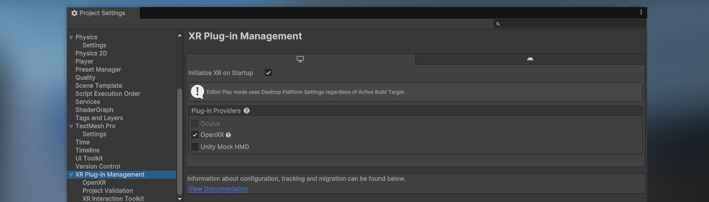

Projets2026
Réalité virtuelle
Funfair VR et Hotel Murder VR, deux projets du Master. Ma part : des attractions, un menu à portails, le son, et une scène d’enquête.
- Cadre
- Master Sciences et Technologies du Métavers
- Où
- INSA Hauts-de-France
- Période
- 2025 à 2026
- Équipe
- Projets de Master en équipe
- Mon rôle
- Développement Unity et C#, interactions VR, son


En bref
- Le problème
- En VR, tout doit se comprendre sans notice, en prenant les objets en main.
- Ma part
- Deux attractions, un menu à portails et le son de Funfair VR, la salle de sécurité de Hotel Murder VR.
- Le résultat
- Deux projets menés au bout, en Unity et C#, code public sur GitHub.
Le contexte
Deux projets du Master Sciences et Technologies du Métavers. Funfair VR : une fête foraine médiévale en cinq mini-jeux. Hotel Murder VR : un escape game d'enquête dans un hôtel, où chaque membre de l'équipe crée sa propre scène.
Le problème
En VR, il n'y a pas de place pour une notice. Tout doit se comprendre en prenant les objets en main, sans consigne à lire.
Ce que j’ai construit

Funfair VR, ma part
La piscine (dunk tank), le punching-ball, le menu VR à portails qui relie les scènes, la musique et les effets sonores.
Hotel Murder VR, la salle de sécurité
Dans l'escape game à trois, ma scène est la salle de sécurité : des PNJ, une enquête et des énigmes variées.
Les décisions techniques
- Un menu qu’on traverse
- Le menu de Funfair VR est fait de portails : on passe d’une attraction à l’autre sans quitter le monde.
- La physique comme règle du jeu
- La piscine et le punching-ball reposent sur la physique de Unity : on vise, on lance, on frappe.
- Deux versions de Unity
- Unity 2022.3 avec l'Universal Render Pipeline, XR Interaction Toolkit et OpenXR pour Funfair VR ; Unity 6 et XR Interaction Toolkit 3 pour Hotel Murder VR.
Le résultat
- 5mini-jeux dans Funfair VR
- 6scènes
Le code des deux projets est public sur GitHub.
Stack
- Unity 2022.3
- Unity 6
- C#
- URP
- XR Interaction Toolkit
- OpenXR
- Meta Quest